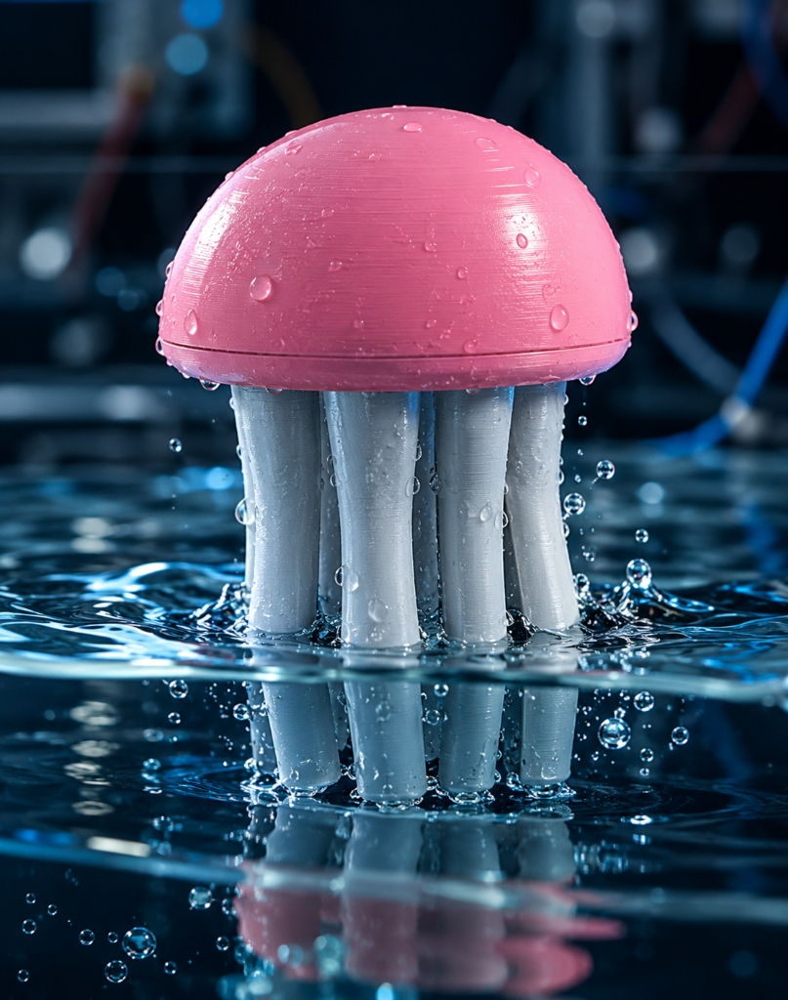

Overview
Conditions

Water Composition
Waiting...
Random Forest Classifier Offline
Active Treatment
System Offline
Decision Engine Override
Pollution Spike Risk
0.0%
LSTM Sequence Prediction (10-step)
Continuous Learning
Validate the current AI prediction or correct it to expand the dataset.
Baseline Calibration
Establish a clean water reference for anomaly detection.
0.00
pH0.0
ppm0.0
NTU0.0
°CSpatial Water Catchment Radar GIS ACTIVE
Regional multi-hub surveillance mesh surrounding the active Jellyfish Probe
Turbidity Trend
Last 30 inferences
TDS Trend
Last 30 inferences
pH Level
Last 30 inferences
Temperature
Last 30 inferences
LSTM Spike Risk
Predictive trajectory
Validation Distribution
Cumulative class assignments

Hardware Fleet Topology
| Node ID | Type | Status | Telemetry Frequency | IP Address | Uptime |
|---|---|---|---|---|---|
| Jellyfish_01 | Sensor Edge Node | Offline | 5 Seconds | - | 0 |
| Actuator_02 | Action Edge Node | Offline | 3 Seconds (Polling) | - | 0 |
| Jellyfish_02 | Sensor Edge Node | Offline | - | 192.168.1.114 | 0.00% |
Actuator Control Panel
Toggle any switch to manually override the AI Decision Engine for demonstration or sensor failure scenarios.
Standard Pump
Routes water securely bypassing treatment.
UV LED Module
Neutralizes biological & packaging residues.
Electrolysis Electrode
Breaks down complex antibiotic compounds.
Heavy Pre-treatment
Activated upon high Spike Probability.
Decision Engine Ruleset
- Spike > 80%: Trigger Heavy Pre-treatment
- Antibiotic Contamination: Trigger Electrolysis
- Packaging Residue: Trigger UV Module
- Normal Water: Standard Pump Route
- Anomaly/Hardware Failure: System Offline Lock
Environmental Governance
National Water Quality Monitoring Protocol Framework
Simulation Engine
Force a multi-hub pharmaceutical contamination event to demonstrate the triangulation and response workflow.
Source Triangulation
No active contamination clusters detected in the network.
Response Logistics Protocol
- System Nominal: No immediate action required.
- Automated Monitoring: Active across 25 regional nodes.
Isolation Forest
Role: Outlier & Anomaly Detection
Type: Unsupervised Learning
Status: Active
File: iso_forest.pkl
Contamination: 0.10
Random Forest
Role: Component Classification
Type: Ensembles / Trees
Status: Active
File: pollution_classifier.pkl
Accuracy/F1: 0.96
LSTM Neural Net
Role: Time-Series Spike Prediction
Type: Deep Learning
Status: Active
File: lstm_model.h5
Sequence Window: 10 Steps
System Configuration
Settings currently locked to read-only during active simulation.